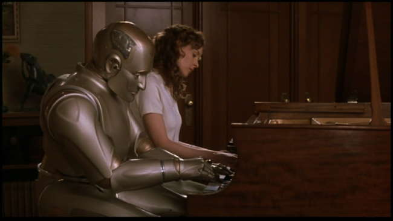
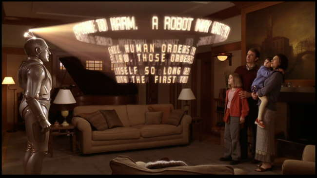
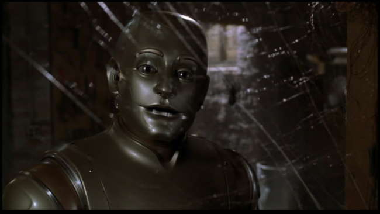
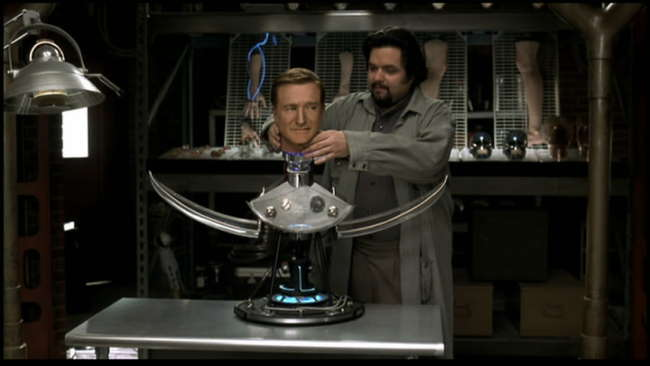
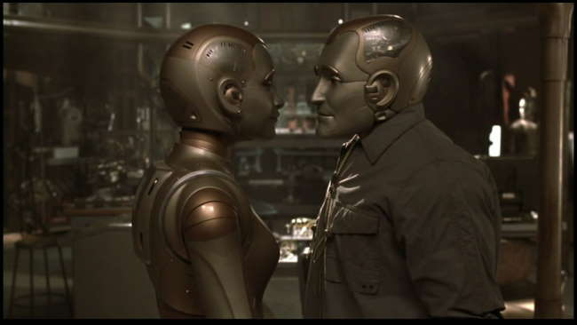
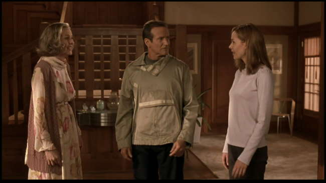
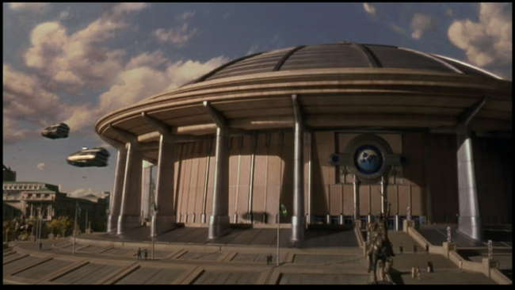
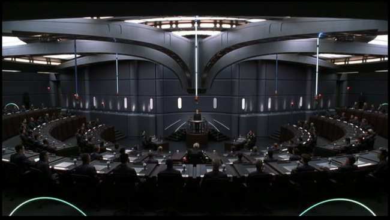

Movie review by : SFAM
Year : 1999
Directed by : Chris Columbus
Written by : Isaac Asimov & Robert Silverberg (short story/novel), Nicholas Kazan (screenplay)
Degree of Cyberpunk visuals : Low
Correlation to Cyberpunk themes : Medium
Rating : 6/10

Overview: What a strange movie to try to categorize. Bicentennial Man seems like a Sci-Fi movie at times and a drama at others. In many ways, Bicentennial Man is hit or miss. Robin Williams and Embeth Davidtz are terrific, but the script itself really has trouble figuring out what movie this is going to be. Still, but there's enough here to make it worth a viewing, as long as you don't mind overly sappy movies.

The Story: In the very recent past (2005 ? but it was the near future in 1999), the Martin family has gotten a new appliance ? a robot named Andrew. And while Andrew obeys the three laws of Robotics, and Andrew (Robin Williams) comes right out of the box with a sense of unexpected wonder. Andrew seems interested in all sorts of things that Robots aren't normally interested in. In spending time with the youngest daughter, Little Miss (Embeth Davidtz), Andrew learns the meaning of love and humanity. Richard Martin, the father (Sam Neill) is intrigued by this and brings Andrew back to the corporation to talk about his "uniqueness." The robotics maker is worried that this "bug" will ruin business and wants him terminated immediately. Luckily for Andrew, Richard likes his uniqueness, and decides to spend his time teaching Andrew everything a sentient person needs to know.

Andrew continues to grow and expand his capabilities and thinking. He becomes a master clock maker, and after working out the specifics of getting a bank account, makes millions in selling them. Time hurries on (well, not really ? this part could have been edited somewhat) and Andrew's family grows old and starts to die off. Andrew eventually asks and is granted his freedom, but still hangs around the family, especially Little Miss. He eventually goes in search of others like him, and then later finds ways of "upgrading" his appearance to become human-looking. It is at this point that he meets Little Miss's grand daughter, Portia. He is captivated by her immediately, and begins to contemplate sharing the love with a human. But in order to do so, he decides he must be "declared" a human ? this too will require change.

Is it cyberpunk? I was really torn about whether or not to include Bicentennial Man on this site. It clearly is not a cyberpunk movie in tone, in that the near future is closer to an idyllic situation than a dystopic one. We also don't see a massive corporation controlling society. In fact, the story isn't focused on society at all ? it's on an individual. So why include it in a cyberpunk site? Because of the post-human nature of the story Bicentennial Man presents us. Here we see an example of an android as a post-human versus a human transformed into a cyborg. The whole question of sentient androids and their quest for freedom and self-determination is raised and explored, although not to the extent I would have liked. In this Idyllic future, Androids are essentially still considered high-tech kitchen appliances. In its better moments, Bicentennial Man poses the question our society may face one day ? when do we grant human rights to the products of our innovation? But again, I do fully appreciate that this move sits more in the gray area than it does as a cyberpunk flick.

What defines humanity? One really wishes Bicentennial Man spent more time elaborating these questions instead of getting mired in a love story. While the love story was interesting and well done in an overly sappy sort of way, it is far less interesting than the question of what would make androids human. Here we have two androids ? one clearly nothing more than a kitchen appliance, and the other something significantly more. Andrew has freewill, self-determination, is self-motivated, and clearly seems to "feel" love. Over time, he upgrades his body with the help of robotics tinkerer, Rupert Burns (Oliver Platt) so that he is human in virtually every way (can feel, have sex, etc.). In Bicentennial Man, Andrew pursues being declared "human" versus having human rights. Unfortunately, the movie glosses over how Andrew had the rights to maintain a bank account, own a house on the beach, or even a company. It's clear that humanity encapsulates quite a few requirements ? this movie focuses on our lack of immortality as a defining characteristic of humanity. While this may be true, it's hardly complete. We are left with the idea that Andrew has all the other (unstated) traits but this one.

The Love Story: Bicentennial Man is a love story, and although it's sappy, it's still a complicated one. Andrew was really in love with Little Miss, but neither he nor her (who was also in love with him) were strong enough to admit it. Yet Andrew has another chance when her grand daughter, Portia, is an almost perfect image of Little Miss. Even then Andrew has trouble coming to terms with the possibilities. In the end, Andrew's potential relationship with Portia represents his last step transforming to human.

The FX: While Andrew's expressions are well done, clearly lots more could have been undertaken here. Every so often, we get glimpses of futuristic cityscapes, but unfortunately, these appear more tacked on than integrated. Throughout most of the story, which takes place over the course of 200 years, we see no interesting change in society. Literally, the technology doesn't seem to affect life at all. This really is an almost unforgivable lack of thought and imagination. While there was scene after scene of little love and caring vignettes, futuristic visions were pretty much non-existent here ? they could have easily been integrated.

The Bottom Line: There is a number of problems with Bicentennial Man which detracts enjoyment. For starters, Andrew's uniqueness is essentially magical, as no explanation is ever given. I would have hoped as Andrew became an inventor supreme of human and android cyborg parts, he would have spent time questioning his own existence and attempted to replicate it. Also, the length of time spent on Andrew with his family could probably have been edited down somewhat, and the time spent on the more interesting android questions and their effect on society could have been expanded. Still, there is enough here to make Bicentennial Man worth a watch. Williams and Davidtz have great chemistry and make the sappy love story work. And the questions posed are explored in at least enough detail to make you think.